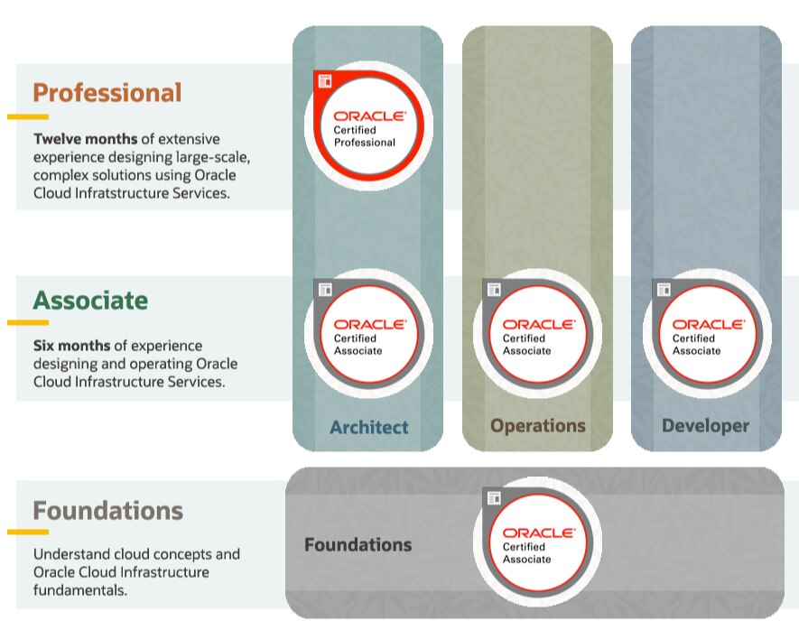

Certificação Oracle Cloud Infrastructure 2019 Architect Associate (1Z0-1072) - Como foi a prova
Blog Oracle CertificaçãoCompartilhe esse post nas redes sociais...
Olá Homelabers!
Antes de mais nada, você não vai encontrar nenhum DUMP ou respostas da prova aqui! Se é isso que você veio procurar, está no lugar errado! E por favor, nem adianta me pedir! Se tem uma coisa que eu abomino é DUMPEIRO
Na última terça-feira, 14/04 fiz a prova Oracle Cloud Infrastructure 2019 Architect Associate (1Z0-1072) e como fiz no último post sobre a certificação Foundations, vou contar minhas impressões sobre a prova e o material que utilizei para me preparar.
Se você caiu de paraquedas nesse post, recomendo que pare aqui e leia esse outro post, onde eu falo com detalhes sobre a promoção que a Oracle está fazendo para certificação OCI. Até o dia 15/05 você pode fazer 6 treinamentos + certificação totalmente grátis. Vai lá e depois volte aqui! :)
Se você quiser saber mais sobre como foi a prova da certificação Oracle Cloud Infrastructure 2020 Foundations Associate é só acessar esse outro post.
A Certificação
A certificação Oracle Cloud Infrastructure 2019 Architect Associate (1Z0-1072) é a primeira na vertical de Architect na pirâmide de certificação da Oracle voltada para OCI.
Ao contrário da Foundations, essa é uma certificação mais complexa e que cobra muito mais do que conceitos básicos. Você precisa ter conhecimentos de arquitetura de infra e cloud e saber os serviços disponíveis na cloud da Oracle.

O exame Oracle Cloud Infrastructure 2019 Architect Associate foi desenvolvido para indivíduos que possuem um forte conhecimento básico em arquitetura de infraestrutura usando os serviços Oracle Cloud Infrastructure. Esta certificação abrange tópicos como: conceitos de computação em nuvem (HA, DR, segurança), regiões, domínios de disponibilidade, terminologia e serviços OCI, redes, bancos de dados, banco de dados autônomo, balanceamento de carga, FASTCONNECT, VPN, compartimentos, gerenciamento de identidade e acesso e marcação. Essa certificação valida o profundo conhecimento dos serviços da OCI para aumentar a infraestrutura e fornece uma vantagem competitiva no setor. Recomenda-se treinamento atualizado da OCI e experiência prática.
Informações
Audiência:
Arquitetos de Cloud:
- Responsável pela arquitetura de soluções de cloud computing
- Tem um forte conhecimento dos conceitos de cloud computing
- Grandes conhecimentos de todos os componentes do OCI
- Cria infraestruturas de cloud resilientes e de alta disponibilidade
- Sabe traduzir infraestrutura on-premises para infraestrutura de cloud
Detalhes da Certificação:
- Título: Oracle Cloud Infrastructure 2019 Architect Associate
- Número: 1Z0-1072
- Preço do exame: $ 150.00 USD - Free até 15/05
- Formato: múltipla escolha
- Língua: Inglês
- Duração: 105 minutos
- Número de perguntas: 66
- Pontuação de aprovação: 65%
Tópicos do Exame:
- Identity and Access Management
- Apply core Identity and Access Management components
- Explain resource locations
- Design federation with various identity providers
- Apply IAM, governance, and security best practices
- Networking
- Apply design concepts related to VCN components
- Describe Public and Private IP addresses and virtual NICs
- Apply VCN connectivity options
- Understand remote network connectivity
- Apply OCI Load Balancer concepts
- Understand OCI Edge services
- Apply OCI networking best practices
- Advanced Networking Concepts
- Manage your cloud network components, such as Virtual Private Network (VPN), Fast Connect,
- Multiple VNICs, and IP addresses
- Instantiating a Load Balancer
- Discuss Load Balancer terminology and concepts
- Set up a Load Balancer
- Compute
- Understand compute and sizing
- Troubleshoot options using console connections and boot volume
- Architect High Availability and Disaster Recovery solutions
- Describe image options
- Storage
- Understand OCI Storage options
- Design storage solutions for applications and database
- Launching Bare Metal and Virtual Compute Instances
- Describe the components of Compute service, including shapes, images, and custom images
- Create and manage a Compute Virtual Machine (VM) instance
- Database
- Describe OCI Database options
- Explain OCI Database Operations
- Architect HA and DR solutions
- Managing Autonomous Database
- Advanced Database
- Use advanced database features, such as Data Guard, BYOL, Data Encryption, RAC, and Exadata
- Architecting Best Practices
- Architect High Availability (HA) using OCI
- Design for Security using OCI
Material de Estudo
Para me preparar para essa prova, além de ter assistido a todos os videos do curso on-line, eu também dei uma lida na documentação para fixar alguns pontos.
Não sei como é a sua forma de estudos, mas eu recomendo demais que você faça anotações dos pontos principais de cada tópico, principalmente conceitos e números (máximos, mínimos, etc.).
- Study Guide
- Overview
- Exam Details
- Student Guide
- White Papers
- Product Documentation
- OCI User Guide (PDF)
- Oracle Cloud Infrastructure Architect Associate
Prova On-line
Eu já falei bastante sobre como é a prova on-line no post Certificação Oracle Cloud Infrastructure 2020 Foundations Associate - Como foi a prova, então recomendo que você leia as dicas lá!
Muita gente me procurou e eu também vi em alguns grupos, que algumas pessoas estão tendo dificuldades na hora da realização da prova. Isso está acontecendo devido a demanda gigante. Veja o post do Rohit falando sobre esse problema e como proceder.
Como foi a prova
Bom, essa prova foi bem mais difícil do que a primeira - mas isso eu já esperava.
Tudo o que foi cobrado na prova, foi falado nos videos do treinamento on-line, então se você prestou atenção e absorveu o conteúdo, vai conseguir se sair bem.
As questões em sua maioria são em formato de case. É apresentado um cenário com um problema e você tem que responder como resolver esse problema.
Exemplo de pergunta:
You have a shared file system between two web servers using File Storage Service (FSS) and you were tasked to create a backup plan for this environment to protect the data placed into the shared file system. What is the recommended approach to create this backup using FSS features?
São vários detalhes que você deve prestar atenção - pegadinhas.
Para mim caiu bastante conteúdo de banco.
O tempo é OK para responder todas as perguntas com calma. Não sobra muito, mas também não precisa fazer correndo. Eu terminei a prova faltando 20 minutos para terminar o prazo, e respondi todas as perguntas com bastante calma.
E o resultado?
Mais uma vez, a minha foto ficou ridícula! Parece que isso está se tornando uma marca registrada :) Mas novamente, o que importa é que eu passei!

Agora o próximo desafio é a prova Oracle Autonomous Database Specialist. Essa vai ser bem mais complicada, porque os meus conhecimentos de banco de dados são bem rasos, mas vou pra cima!
Se você vai fazer essa prova, boa sorte! E depois me conte no Twitter ou no LinkedIn como foi! Se você já fez, compartilhe a sua experiência conosco.
Até a próxima!
Compartilhe esse post nas redes sociais...
Valdecir Carvalho
Nerd e pai orgulhoso da Mariana e João. Profissional Sênior de TI com foco em arquitetura de infraestrutura e cloud computing. Blogueiro, podcaster, palestrante, amante de comunidades técnicas, fotógrafo aposentado e adora jogos antigos.
#vExpert · #VMUGLeader · #VUGBrasil · #vBronwBagBrasil · #VeeamVanguard